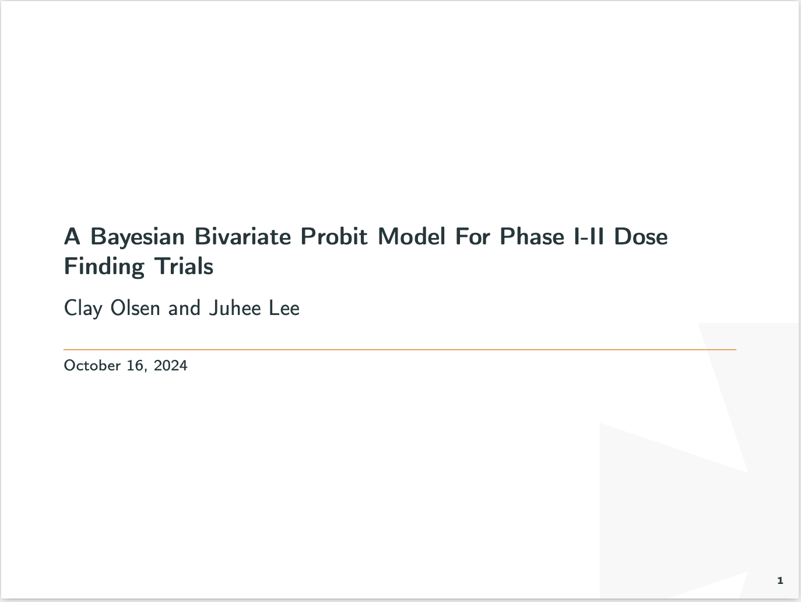
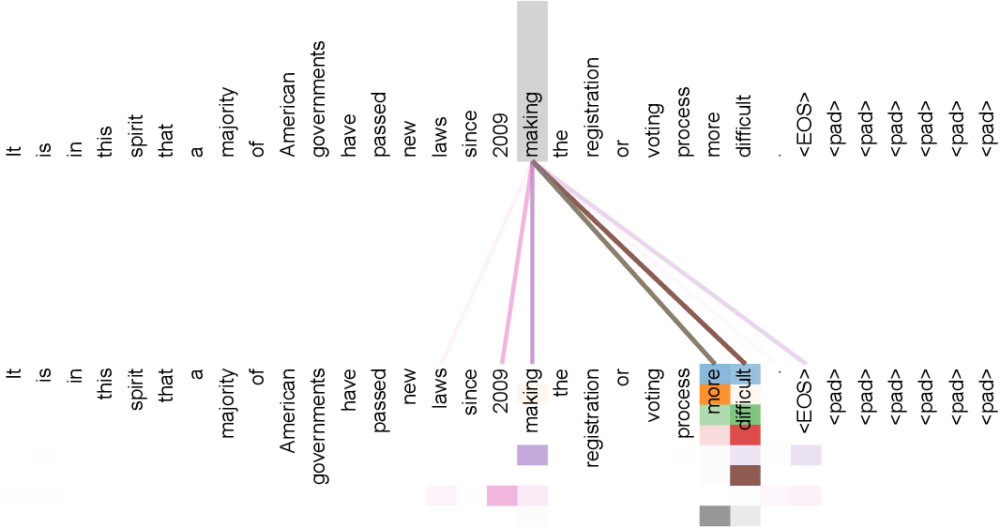
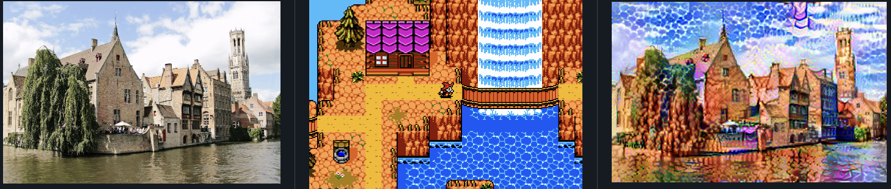
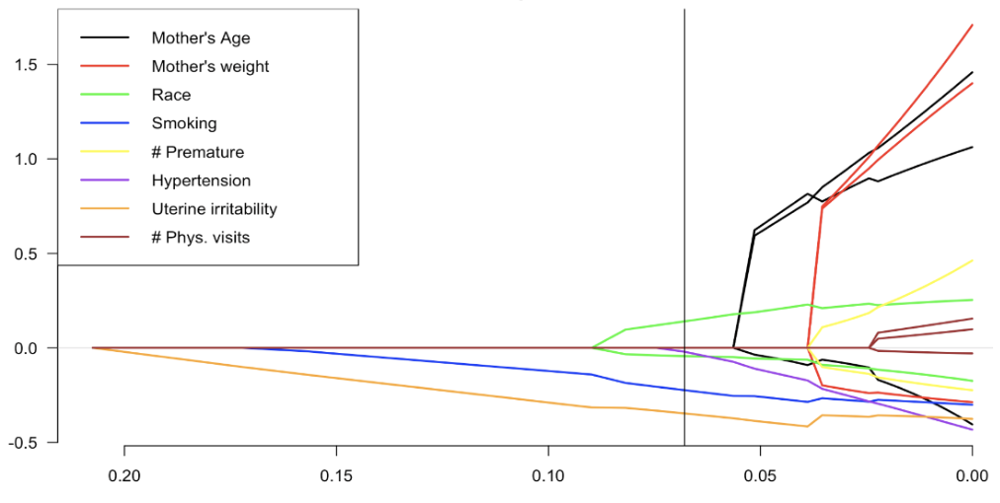

A Bayesian Bivariate Probit Model For Phase I-II Dose Finding Trials
A single model-based, early-phase trial design can be utilized to simultaneously account for efficacy and toxicity. We used a bivariate probit design to model the binary outcomes of efficacy and toxicity under a Bayesian framework while accounting for potential dependencies between dose-efficacy and dose-toxicity. We evaluate dose levels with an intuitive utility function, proposed in Liu and Johnson [2016], that accounts for desired trade-offs between efficacy and toxicity.

Haiku Transformer
This repository contains a transformfer model following the infrastrucutre presented in Attention is All You Need paper to produce lines of text in the form of 3 line poems from scratch. The dataset used was statworx/haiku from huggingface. The dataset consists of mostly haikus in the 5-7-5 syllable structure, but there are many unstructured 3 line poems in the mix.

Style Transfer
Includes both a individual use case style transfer model and a fast style transfer model training to quickly change images to the style of Starry Night. The first model is implemented by optimizing an output image to match the content statistics if the content image and the style statistics of the style reference image which are extracted from the images using the intermediatary layers of Convolution Neural Network. The vgg19 model, used in this example, is trained to understand an input image and generalize its invariances and defining features within classes, ignoring potential background noise. The trained model uses vgg19 model to train a feed-forward network for image style transfer using a single style reference image.

Model selection and estimation in regression with grouped variables
Sometimes, we have variables that seem linked in structure. In these models, we can express these linked variables as a group of input variables. The most common example of this is with multi-factor analysis of variance (ANOVA) models, where a factor with several levels will be expressed through multiple dummy variables. We would aim to select the important variables and interactions necessary for accurate prediction. Also in additive models, we often have polynomial and non-parametric variables. In these models, we would select important groups of basis functions. In these situations, variable selection generally amounts to the selection of important factors, not just the individual input variables. It is useful to group input variables of the same factor for eventual analysis in these situations.
Traditional selection methods for these cases include best subset and stepwise procedures. The problem with these kinds of procedures is that they do not have a piece-wise linear solution path, so they are computationally expensive. Some methods such as lasso and least angle regression selection (LARS), have piece-wise linear solution paths, but are more tailored towards identifying individually important variables rather than groups of variables. This paper presents three methods tailored towards grouped variables selection: Group Lasso, Group LARS, and Group Non-negative Garrote (NNG). These methods treat variables in a grouped setting, while utilizing their computational efficiency and reliable accuracy under certain circumstances.

Credit Card Fraud Detection
It is important that credit card companies are able to recognize fraudulent credit card transactions so that customers are not charged for items that they did not purchase. In this project, we aim to classify credit card purchases as fraudulent or non-fraudulent based on credit card purchase data found on kaggle. We will fit a variety of ML models to see what performs best based on criterion that favors decreasing false negatives as they are most crucial in fraud detection with imbalanced data.